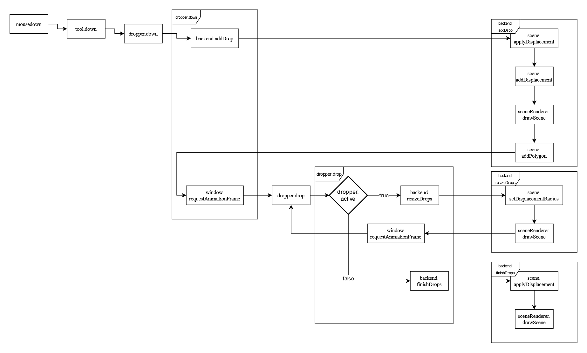

General Documentation
Used technologies and languages
JavaScript
 | JavaScript is a programming language originally designed to be executed client-side in web browsers to extend the capabilities of the World Wide Web. The source code of Marbellous is made up of about 40% JavaScript, handling the frontend alongside HTML5 and CSS. |
C++
 | C++ is a programming language created as an extension of the C programming language and was designed to allow for efficient, high-performance applications. The backend of Marbellous is written in C++ and thus it accounts for about 60% of the source code. |
WebAssembly
 | WebAssembly (shortened WASM) is an open standard which defines portable binary code, a corresponding assembly language as well as interfaces for them. The main goal of WebAssembly is to allow high performance in websites. Because the performance of the calculations is paramount for the interactivity of the marbling, we decided to use WebAssembly for the backend. |
OpenGL/WebGL
 | OpenGL is a cross-language, cross-platform, abstract API for rendering, typically hardware-accelerated. One of the most important language bindings of this API is the Javascript Binding WebGL, which allows rendering in web browsers. In Marbellous we use WebGL for the rendering of the color drops and some calculations for their interactions. |
Emscripten
Emscripten is a LLVM/Clang based compiler for turning C/C++ source code into WASM. It is also used in Game Engines like Unreal Engine, Godot and Unity to export games to the browser. We decided to use Emscripten to be able to write the backend code in a language that is meant to write highly efficient software. |
CMake
 | CMake is a cross-platform software for build automation, testing, packaging and installation of software with compiler independent methods. It is not a build system, but it generates files that can be used with build systems. For Marbellous, we used CMake alongside of Make in the context of Emscripten to build our webassembly files. |
Webpack
| Webpack is a JavaScript module bundler. It is used to combine multiple source files into one. |
NPM
 | NPM (node package manager) is a manager for JavaScript libraries, like the one we use to export images to png. |
Git
| Git is a revision control system created in 2005 to help with the development of the linux kernel. It excels in coordinating multiple programmers collaboratively working on source code. |
GitHub/ GitHub Projects/GitHub Actions/GitHub Pages
 | GitHub is a host for git with several additional features: GitHub Projects provides a Kanban board for coordination of collaborative work. GitHub Pages is a static web page hosting service provided by GitHub. GitHub Actions is a CI/CD system that allows automatic actions to be taken after user-defined triggers were activated. We used GitHub Actions to always compile the latest version of Marbellous and automatically host it on GitHub Pages. |
Front- and Backend

Frontend
Frontend is responsible for all the visible control elements and their functions using HTML5, JavaScript and CSS. It interacts with the backend via the JavaScript functions WASM provides.
Backend
The backend is the part where all calculations related to the marbling and rendering of the scene happen. A detailed explanation to the way we render can be found here.
Backend class types and their interactions
Before taking a closer look at the backend, let's think about it in a broader sense. When looking at our classes, you can roughly assign each of them to one of three types. We have classes that represent:
- a basic data model (e.g. color, point, scene)
- global states (e.g. options, context)
- renderers (e.g. sceneRenderer, filter)
Generally speaking, the global states modify the way in which the renderers process the basic data models into the end result shown to the user. In the case of the RakeRenderer, there is some information that could have been represented as basic data models, but were so integral to and only used by it, so we decided to include them into the renderer itself.
Overview over the classes in the backend
- Color - Basic color class with getters and setters.
- DropData - Contains the relevant information of drops (position, radius, color).
- Options - A class for interacting with several states (background color, active palette, drop state).
- Palette - Contains a vector of colors and some functions to randomly pick them.
- Polygon - Represent polygons in 2D as a list of vertices in counter-clockwise order.
- Scene - Contains all exisiting polygons and methods to add and displace them.
- WGLContext - Contains several parameters for WebGL (e.g. resolution for Rake, Drop).
- WGLRenderer - Base class containing everything all renderers need.
- WGLRakeRenderer - Inherits from Renderer and is used to rake.
- WGLFilter - Inherits from Renderer and is used to filter.
- WGLSceneRenderer - Inherits from WGLRenderer and is used to display the scene.
Backend API
The backend API is mostly accessed by using Module.cwrap(), which generates a callable JavaScript function that was compiled from C++ to WASM via Emscripten. Here is a list of the backend functions called that way. Further documentation is linked to the function names:
Marbling
Color Dropping Basics
In the physical world, marbling works by putting drops of oil-based color onto a water surface. Since oil and water don't mix, the drops spread out as far as they can on the water surface and displace one another, each new drop forcing the whole surface to adapt to a new equilibrium.
Color Dropping Algorithm
The way we calculate the displacement of old drops when a new one is added makes use of our decision to store the drops as polygons with a discrete number of vertices. When a new drop is added we move every vertex of every older drop in a straight line away from the center of this new drop.
Raking Basics
When a marbling artist is satisfied with the drops he placed onto the surface, he can begin to to carefully draw a rake through the water surface. Nearby color is attracted to each tine and follows their path to some extend, allowing for very complex patterns.
Raking Algorithm
Linear Rakes:
When calculating rake strokes, for every pixel in the resulting image we calculate the position we need to look in the opposite direction of the stroke (because that is where the color came from that will land at the spot we are interested in).
The strength of the stroke falls off the further away from the tine the line of pixels is. Conceptionally there is no difference between horizontal and vertical strokes. In both cases we ensure that we don't look into a void by wrapping around the canvas.
Wavy Rakes:
To realize wavy rake strokes, we use a trick. First, we shift the lines/rows of pixel perpendicular to our main stroke direction with wraparound in accordance to the user-specified wave, then we apply a normal linear rake on that modified canvas, and then finally we do the opposite of the first shift we did. The result looks close to someone actually going over the surface in a wavelike manner.
Color Dropping In Code

When the left mouse button is pressed down, first a drop is added (backend.drop), then a loop will start that keeps growing the drop and displacing the other drops further and further (dropper.drop) while rendering and displaying the scene after each update. A detailed explanation on how we draw the scene can be found here.
The loop keeps going until a mouseup event is registered, which will set the loop variable dropper.active to false, causing dropper.drop to go into the terminating branch that calls backend.finishDrops instead of calling itself again.
Raking In Code

In rake mode, everytime the mouse button is held down and moved, the corresponding information for that rake is saved. Once the button is released, rake.up is called which makes the calls to the backend to apply the rake and then draw the resulting, new scene.
Postprocessing
Sometimes when using marbellous, we noticed that some of the edges of the color drops could start to look a little bit too sharp or blocky. This is why we have also implemented a postprocessing filter to smooth out the edges. In the same way we draw the scene and rake over it, the postprocessing is also implemented as an OpenGL shader. We use a 1D binomial filter across both of the image dimensions, achieving a 2-dimensional blur.
Due to the way different operating systems and browsers handle graphics differently internally however, this process can work in unintended ways on some systems. For the users affected, we provide the option to disable the postprocessing.